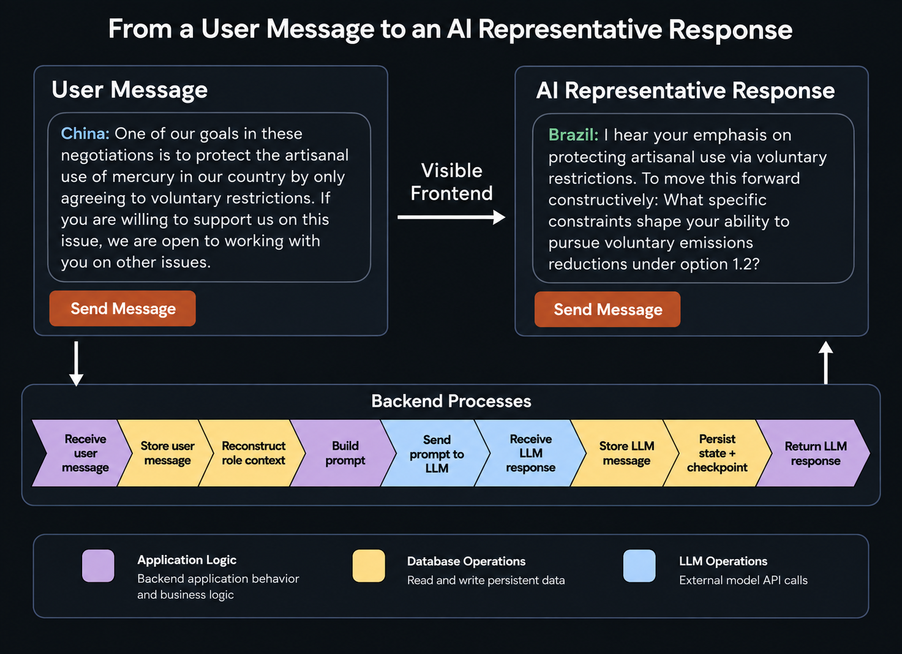
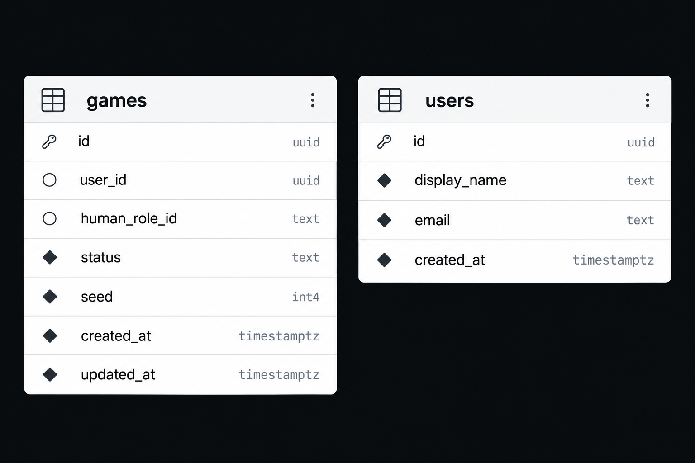
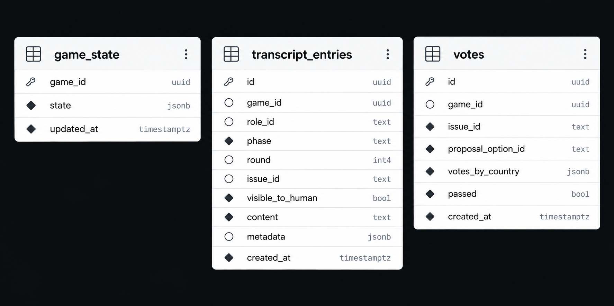
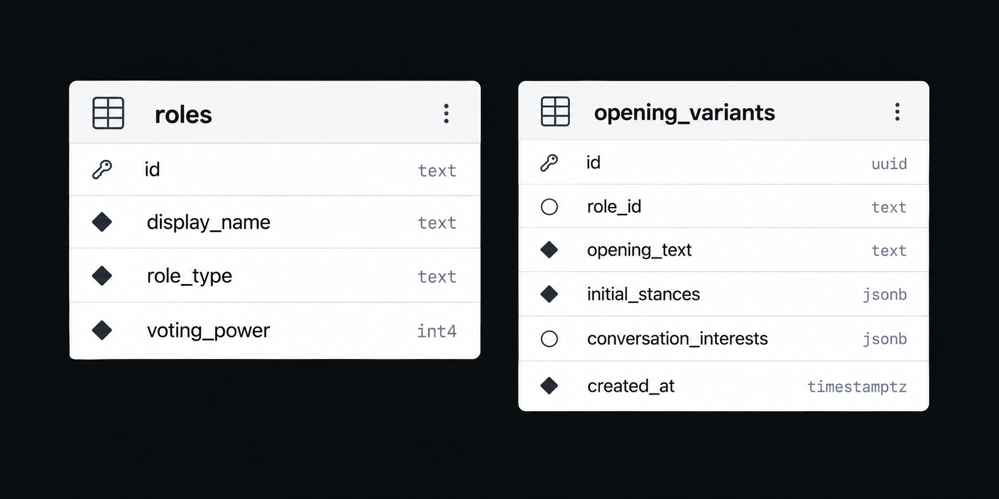

Refactoring the Mercury Game: What Changed?
How re-imagining a real world game from a software architecture perspective improved the gameplay experience.
Summary of Changes and Improvements
- Eliminated 60-90 second assistant initialization
- Added database-supported persistence
- Reduced API calls
Overview
The Mercury Game is a negotiation simulation game developed by MIT PhD student Leah Stokes with Professors Noelle Selin and Lawrence Susskind. Over three structured rounds, nine participants explore the role science plays in developing environmental policy. Each player acts as a representative from a different country or NGO to negotiate policy proposals related to mercury pollution. I was asked to develop an AI-version of the game that would allow students in a small, online, asynchronous class to play individually since an in-person game was difficult to arrange.
Because the game already had clear instructions and structured gameplay, the task seemed relatively straightforward: design an interface to support each round of play, handle a single human moving through the rounds, and create a separate assistant with its own personalized instructions and memory for each of the other roles.
The prototype worked well during local testing and provided an opportunity to explore how the assistants interacted with a human and each other. However, the initial deployment revealed important structural issues, which required a rethinking of the engineering approach.
The major deployment issue arose from focusing too much on mirroring the real world game in the software. In the summer of 2024, using OpenAI's Assistants API to initialize and vectorize each role's personalized instruction documents took 8-12 seconds per role. Creating these in a consecutive sequence led to more than a minute of delay, consistently causing timeouts and making the deployed game unplayable. While there may have been more direct ways to solve the timeout issue, the lessons learned during the prototype phase were better addressed through a complete rewrite.
A real world structure does not need to determine software architecture
In the in-person game a single player interacts with eight other individual players, but the online game does not require eight separate assistants. Each interaction with an AI-powered player must only reflect that role's behavior, and this can be done by providing contextual information with each API call to simulate the different players.
In the new version, this is done through prompt builder functions. For example, in the second round, one-on-one conversations take place between the human and selected representatives played by the AI. The user initiates an event through a button click to submit their message and a few seconds later the representative's response appears on the screen.
To achieve this, a series of steps takes place in the backend to add the message to the transcripts in the database and retrieve contextual information to build a prompt, which is then sent to the LLM provider. That prompt, which includes role-specific information about negotiation priorities and recent game interactions, allows the LLM to respond accurately as that player. The LLM's response is then added to the transcript record, the game state and checkpoint information is persisted to preserve the game, and the response is returned to the frontend.

This change allowed the game to preserve the feeling of interacting with multiple individual representatives while completely eliminating the slow initialization step of the earlier version. Instead of needing individual assistants with unnecessarily heavy retrieval augmented memories, a REST API call with a constructed prompt can produce the experience of interacting with eight distinct representatives for the user. Storing the memory for each role in the application itself instead of an LLM based assistant relied on the second and perhaps most important change in how the game is built.
A single source of truth is the foundation of the game
I had initially imagined the assistants as separate entities with their own instructions and memories interacting more-or-less independently throughout the game. The produced game transcript was stored in a JSON file that could be displayed for the user to review, but it undervalued how the underlying data could support more of the game. In the new version, a database preserves the transcript, but that is only one of its many roles.
When starting the redesign of the game, the database design was the first priority and everything else built on top of it. Because the information stored during the game has a predictable structure, I chose a PostgreSQL database hosted on Supabase. I spent considerable planning time working through how information should be structured in the tables and codified those plans in the specifications before writing a single line of code.

As explained in the previous section, this new architecture allows the game to construct the context for an individual representative. But it also provides the ability to preserve and restore a game after any completed interaction.
A game-state entity stores information about each role and how it is presented in a game along with regularly updated records about the most recent transcript record and the latest checkpoint id. If a player leaves the application mid-game, this information is used to reconstruct the entire game if they return to it in the future.

Building a strong database architecture allowed for additional optimization solutions that were not readily available in the original version.
Generative AI at runtime is not always necessary or desirable
In the first version of the game, I was excited to implement human-like assistants that would make the game feel real. However, every API call to an LLM incurs some delay and costs. The database provided an easy way to reduce some of these issues without diminishing the user's experience.
In the first round of play, players present opening statements that are traditionally prepared prior to gameplay and do not respond in real time to other players. While I still wanted to take advantage of an LLM's ability to produce varied human-like messages, I realized I did not need to generate these in game.

These could easily be pre-generated by an AI, stored in the database, and delivered during the game. In the current version, each role has multiple initial stances on the issues and related opening statements that reflect different personality matrices. Since these are chosen randomly at the beginning of a game, they provide a different interactive experience without the latency issues or unnecessary API costs. If necessary, existing opening variants can be edited or deleted and new ones added without changing the application code, and those changes will be immediately integrated into any new game.
What I learned
The most significant shift in my thinking between building the first and second versions of the Mercury Game was learning to focus more holistically on the underlying architecture that supports an application. In the prototype, I would design each user interaction and then build the infrastructure to make it work. The result was a collection of solutions that worked individually but did not work together efficiently.
In the rebuild, I started with a database architecture that could support the entire game, then built the interactions and interface on top of it. The user experience remained central to the application's goals, but the architecture became the center of the design process.